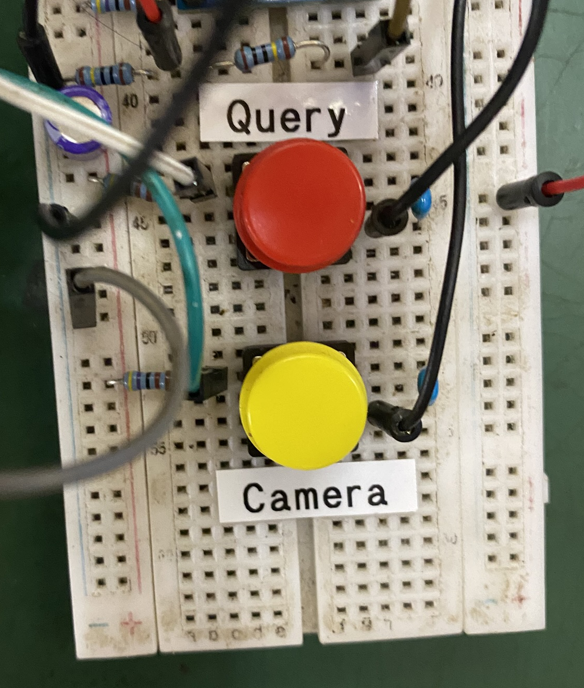
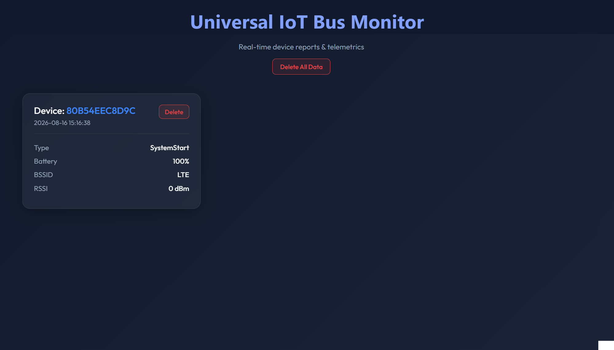
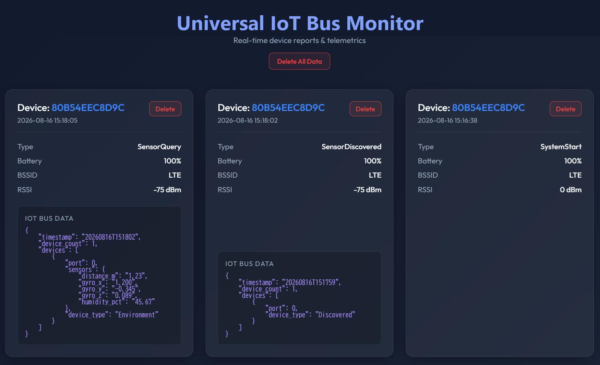
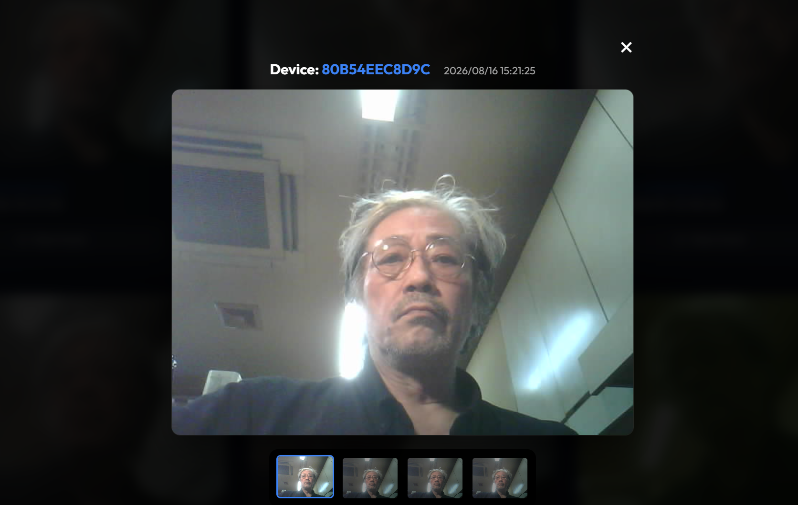

Verification Prototype Live Hardware Report
UIB Interconnect Verification & 100% AI Vibe-Coding Implementation
To thoroughly validate the operational integrity of the Universal IoT Bus (UIB) standard, a hardware testbed was assembled using functional components for comprehensive verification.
The system circuit is composed of: [Host Side] Universal Reference Kit [ESP32-S3 + u-blox LTE] and [Device Side] STMicroelectronics NUCLEO-C071RB Board.
This report details live edge events (sensor readings & camera triggers) received in real-time on our internet monitoring server and visualized on the dedicated Viewer console.
All software operating across these systems—from edge micro-firmware to internet cloud monitoring servers—was fully developed and verified via AI-driven Vibe Coding.
1. Live Hardware Prototype Configuration

Prototype Host Board + Device Board Overview
The prototype comprises a surveillance camera, power battery, IoT Host unit, and IoT Device unit.
The Host and Device boards are interconnected via the standard 6-wire UIB (Universal IoT Bus) interface, guaranteeing plug-and-play data transmission and power coordination.
Host Board Controls (Query / Camera)
The edge Host unit integrates two primary verification UI switches:
- Query Switch: Instantly reads the state of connected Device nodes and transmits a comprehensive diagnostic report to the cloud via u-blox LTE cellular.
- Camera Switch: Triggers the connected surveillance camera to capture 4 consecutive frames and streams the image sequence directly to the internet server.


Device Board & Report Switch Unit
The Device unit (STMicro NUCLEO-C071RB) houses a Report UI Switch alongside integrated environmental sensors.
Pressing the Report Switch emits an autonomous event notification to the Host over UIB. The device reads its accelerometer, temperature, humidity, and proximity sensors, immediately dispatching live sensor telemetry to the internet server.
2. Internet Server Real-Time Telemetry (Viewer Console)
The dedicated Viewer Console monitors the cloud receiver in real time. Upon receiving edge events, the console displays Device ID, Timestamp, Cellular Signal Strength (RSSI), and Telemetry Payloads with zero latency.

Edge Device Startup Notification
When the edge device powers on, a SystemStart boot notification is immediately dispatched via cellular LTE.
The Viewer console logs the device ID, startup timestamp, and radio signal strength.
Node Discovery & Sensor Query Alerts
When the Device board initializes and is detected by the Host over UIB, SensorDiscovered and SensorQuery notifications stream to the server.
This confirms autonomous plug-and-play recognition of new sensor modules across the bus.


Camera Capture Notification & Image Transfer
When the Camera switch is triggered, the camera captures photos and transfers high-resolution image data to the internet server via LTE.
The cloud Viewer displays the captured surveillance image alongside device ID, timestamp, and signal metrics.
Live Hardware Validation & Feasibility Takeaways
This prototype successfully proves "seamless 6-wire UIB bus interoperability between heterogeneous MCUs (ESP32-S3 + STMicro C071)", "autonomous sensor discovery", and "instant cellular cloud telemetry synchronization" on physical silicon.
Furthermore, developing the entire firmware and server stack via AI Vibe-Coding demonstrates unprecedented engineering velocity and rapid mass-production feasibility.